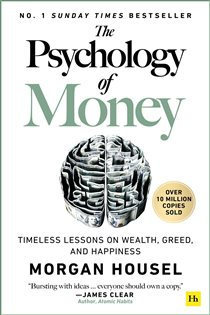

Library › Money & Finance
The Psychology of Money — Summary & Key Lessons

Timeless lessons on wealth, greed, and happiness — doing well with money has little to do with how smart you are.
📖 OPEN THE FULL INTERACTIVE BREAKDOWN →🌐 Read it in Hindi, Hinglish, Gujarati, Tamil & 22 more languages — free, with audio.
💡 The Big Idea
Financial success is not a hard science — it's a soft skill where behavior trumps intelligence. A janitor who buys and holds can die worth $8 million while a Harvard-educated executive goes bankrupt. Housel's 19 short chapters explain why: nobody's crazy (we all learned from different eras), luck and risk are twins, compounding needs time more than brains, getting wealthy and staying wealthy are different skills, and the highest dividend money pays is control over your own time.
🧠 The 8 Key Lessons
Lesson 1: No One's Crazy — We All Learned Different Lessons
Chapter 1: No One's Crazy
Your personal experiences with money make up maybe 0.00000001% of what's happened in the world, but maybe 80% of how you think the world works. People who grew up in high inflation invest differently from those who grew up in stable prices; those who came of age in a booming market trust stocks more than those scarred by crashes. Everyone's money decisions make sense to THEM, in the model of the world they built from their unique experience. Nobody is crazy — but everybody is working with incomplete data.
📖 Example: Americans born in 1950 saw the S&P 500 go essentially nowhere (inflation-adjusted) in their formative teens-and-20s years; those born in 1970 watched it rise nearly 10-fold in the same life stage. Two generations, identical country, opposite conclusions… Read the full example →
⚡ Do this: Write your money autobiography: what era, family, and events shaped your instincts? Now you know which of your 'principles' are actually just... weather from your childhood.
Lesson 2: Luck & Risk: Twins That Look Like Skill
Chapter 2: Luck & Risk
Every outcome is guided by forces beyond individual effort — luck and risk are the same phenomenon wearing different jackets. This means: judge less (that failure might be risk, not stupidity; that success might be luck, not genius), and study broad patterns rather than extreme individual cases. Extreme outcomes (Gates, Buffett) contain extreme luck, making them terrible templates. The more extreme the outcome, the less applicable its lessons.
📖 Example: Bill Gates attended Lakeside — one of the only high schools ON EARTH with a computer terminal in 1968 (roughly a one-in-a-million chance). His equally brilliant friend Kent Evans, who shared the obsession, died in a mountaineering accident before graduating… Read the full example →
⚡ Do this: Stop reverse-engineering billionaires. Study patterns across MANY successes (broad diversification, long holding, low ego) — the stuff that survives luck. And forgive one of your own past 'failures' that was really just risk showing up.
Lesson 3: Never Enough: The Hardest Skill Is Stopping
Chapter 3: Never Enough
The hardest financial skill is getting the goalpost to stop moving: money grows ambition faster than satisfaction, and modern capitalism manufactures envy on schedule. But comparing yourself upward is a battle that can never be won — the ceiling is Bezos, and even that isn't the top. Some things are never worth risking regardless of potential gain: reputation, freedom, family, happiness. Enough is not too little; enough is realizing that the opposite — an insatiable appetite — will push you to the point of regret.
📖 Example: Rajat Gupta ran McKinsey, was worth $100M — and wanted a billion. Insider trading to get there earned him prison and total disgrace. Bernie Madoff was already legitimately earning $25M+ a year from his market-making business BEFORE the Ponzi scheme. Both men… Read the full example →
⚡ Do this: Define your 'enough' in writing: the income, net worth, and lifestyle that genuinely suffices. Then identify what you'd currently risk to exceed it — and stop risking those things.
Lesson 4: Compounding: Shut Up and Wait
Chapter 4: Confounding Compounding
Warren Buffett's skill is investing, but his SECRET is time: over $84 billion of his ~$84.5B net worth (at writing) came after his 50th birthday, and ~$81B after his mid-60s. He's been investing since age 10, compounding for 80 years. Good investing isn't about the highest returns (which are one-off) — it's about pretty good returns sustained for the longest possible time. Compounding's power is wildly counterintuitive: linear minds cannot feel exponential outcomes, so everyone underestimates patience.
📖 Example: Housel's comparison: Buffett compounded at ~22% annually for decades; Jim Simons of Renaissance compounds at 66% a year — three times better. Yet Buffett is far richer, because Simons didn't hit his stride until 50. If Buffett had started at 30 and retired… Read the full example →
⚡ Do this: Stop optimizing for this year's best return. Automate a boring, good-enough investment you can sustain for 30+ years — then protect the streak from your own cleverness.
Lesson 5: Getting Wealthy vs. Staying Wealthy
Chapters 5–6: Getting Wealthy vs. Staying Wealthy / Tails, You Win
Getting money requires taking risks, optimism, and putting yourself out there. KEEPING money requires the opposite: humility, frugality, and paranoia that what you made can be taken away. Survival is the master skill: the only way to compound is to stay in the game through every crash, and room for error (cash buffers, no leverage) is what buys survival. Related: tails drive everything — a tiny number of events/investments produce most results, so being wrong half the time is fully compatible with making a fortune.
📖 Example: Jesse Livermore, greatest trader of his era, made $3 billion (today's money) in one day shorting the 1929 crash — then, emboldened, kept swinging huge and lost everything, eventually taking his own life. Contrast the Vanderbilt fortune evaporating across… Read the full example →
⚡ Do this: Split your strategy: offense (career, business, concentrated bets) and defense (emergency fund, no leverage, diversified core). Never let one bad tail event be able to wipe you out.
Lesson 6: Freedom: The Highest Dividend Money Pays
Chapters 7–9: Freedom / Man in the Car Paradox / Wealth Is What You Don't See
The broadest lifestyle variable that makes people happy isn't income — it's control over one's time. Money's greatest intrinsic value is giving you options: to wake up and say 'I can do whatever I want today.' Two traps to avoid: the Man in the Car Paradox (nobody admires the driver of the Ferrari — they imagine THEMSELVES in it; status signaling buys less respect than you think), and confusing rich with wealthy: riches are what you see (cars, houses); wealth is the invisible part — income not spent, options not yet exercised.
📖 Example: Housel's valet days: guests arrived in Lamborghinis, and he never once thought 'that driver is cool' — he thought 'if I had that car, people would think I'M cool.' The signal never reaches its target. Meanwhile Ronald Read, a Vermont janitor, quietly… Read the full example →
⚡ Do this: Redirect one status expense into freedom savings this month. Measure progress in a new metric: how many months could you survive — or say 'no' to anyone — without income?
Lesson 7: Room for Error, Reasonable > Rational
Chapters 10–14: Save Money / Reasonable > Rational / Room for Error
Savings = income minus ego; past a certain income, your savings rate is determined by your humility. You don't need a specific reason to save — savings without a spending goal is stored flexibility, hedging life's endless surprises. Aim to be reasonable rather than coldly rational: the mathematically optimal strategy you'll abandon in a panic is worse than the decent strategy you can stick with forever. And plan on the plan not going to plan: room for error isn't cowardice, it's the only honest response to a world ruled by uncertainty. Also remember: you will change — the person setting your 30-year plan won't be the one living it.
📖 Example: Housel on rational vs reasonable: mathematically, leverage might optimize returns — but one 2008 wipes you out of the game and out of your compounding streak. He himself holds more cash than any model recommends, 'because it lets me sleep and stay invested… Read the full example →
⚡ Do this: Raise your savings rate 1% this month (ego, not budget, is the obstacle). Choose the investment plan you'd ACTUALLY maintain through a 40% crash — then build a buffer that guarantees you never have to sell in one.
Lesson 8: The Seduction of Pessimism & Your Own Game
Chapters 15–20: Nothing's Free / You & Me / Seduction of Pessimism
Market volatility isn't a fine — it's the FEE for returns; refusing to pay it means refusing the returns. Pessimism sounds smart (it sounds like someone trying to help) while optimism sounds like a sales pitch — but historically, optimists win, because progress compounds quietly while setbacks make headlines. Crucially: identify what game YOU'RE playing. Bubbles form when players from one game (day traders) set prices that players of another game (30-year investors) mistakenly follow. Most bad money behavior is taking cues from people playing a different game.
📖 Example: In the dot-com bubble, a day trader paying $60 for a stock they'd hold for one afternoon was acting rationally FOR THEIR GAME. The retiree who bought at $60 as a 'long-term investment' because prices kept rising imported a stranger's logic into the wrong… Read the full example →
⚡ Do this: Write one sentence: 'I am an investor playing the ___-year game; prices set by people playing shorter games are noise to me.' Read it before every panicked headline.
✅ 5-Step Action Plan
- Write your money autobiography — know which instincts are just your era talking.
- Define 'enough' explicitly, and list what you'll never risk to exceed it.
- Automate a boring strategy you can sustain for decades; protect the streak.
- Build room for error: emergency buffer, no leverage, sleep-proof allocation.
- State your game in one sentence and ignore players of different games.
💬 Best Quotes from The Psychology of Money
- “Doing well with money has a little to do with how smart you are and a lot to do with how you behave.”
- “Getting money is one thing. Keeping it is another.”
- “The highest form of wealth is the ability to wake up every morning and say, 'I can do whatever I want today.'”
Interactive version: mark lessons as read, listen in your language, share quote cards.